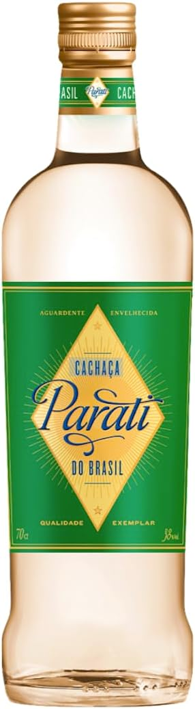

Artisanal · 19th-Century Copper Still · Gold Medal 2024

PARATI is produced from fresh sugarcane juice using an utterly artisanal process in a small 19th-century copper still. Only the heart of the distillation is retained.
PARATI is a blend of young and older cachaças. The aged cachaças are matured in barrels made of local jequitibá wood (a typical tree of the Brazilian Atlantic forest), French oak, and American oak.
The name PARATI cachaça is derived from the beautiful coastal town of Parati, where the first cachaças were produced by Portuguese settlers.
Cut half a lime into 8 pieces. Muddle in a shaker. Add 2cl simple syrup, 5 large ice cubes, and 5cl of PARATI. Stir, and serve!